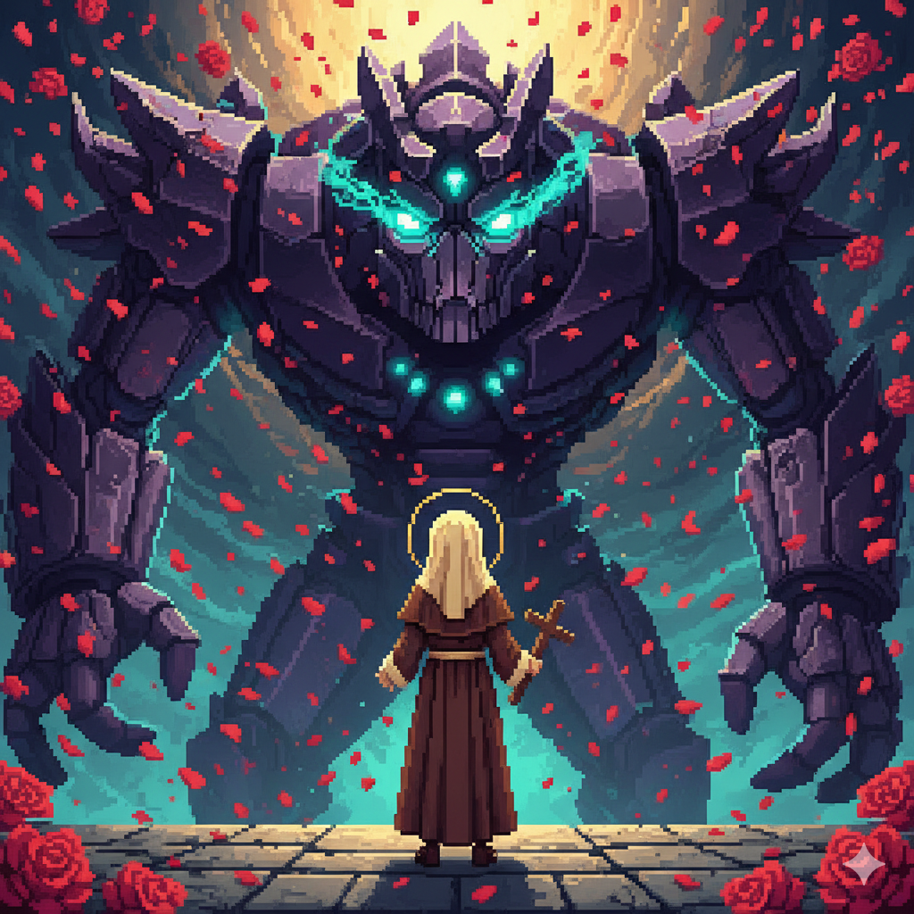

Jogos
Aqui você encontrará jogos inspirados na fé católica.

Tap Lisieux
Cultive rosas e lute contra os pecados com Santa Teresinha em um divertido jogo de clique.
JogarAqui você encontrará jogos inspirados na fé católica.

Cultive rosas e lute contra os pecados com Santa Teresinha em um divertido jogo de clique.
Jogar